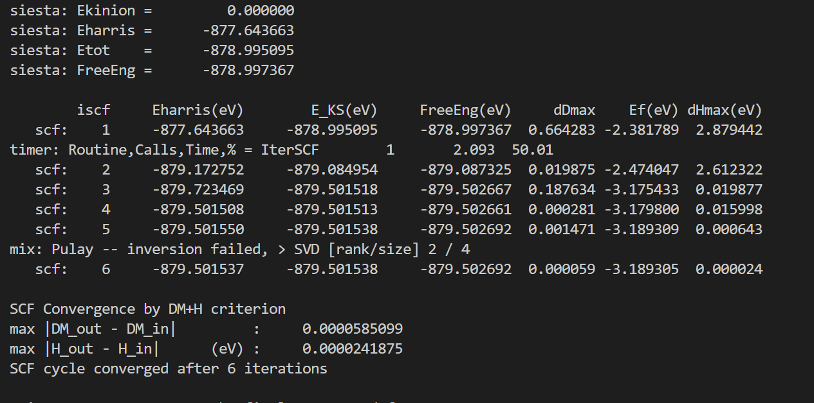

SISETA 빌드하기
Contents
- SIESTA 설치
- 유틸리티 설치
- 테스트 계산
1. SIESTA 설치
이번 강의에서는 SIESTA를 설치하는 법에 대해 소개한다. SIESTA 환경 구축에 대한 더 자세한 내용은 SIESTA Documentation 위키 홈페이지나 메뉴얼에서 참고하길 바란다.
Step 1. 소스 다운로드
SIESTA를 설치하기 위해서는 우선 SIESTA 소스 코드를 다운로드 받아야 한다. SIESTA의 공식 릴리즈판은 SIESTA Gitlab에 공개되어있다. 가장 최신 릴리즈인 4.1.5 버전의 소스 코드를 받으려면 다음 명령어를 사용하면 된다.
소스코드를 받았다면, 다음 명령어로 압축을 풀어준다. 그리고, 압축을 푼 폴더로 이동해준다.
Step 2. 빌드 설정하기
SIESTA를 빌드하기 전에 몇가지 설정이 필요하다.
Obj/폴더로 이동하거나 빌드할 폴더를 만든다.arch.make파일을 만든다.obj_setup.sh스크립트를 실행시킨다.- 빌드 설정이 잘되어있는지 확인한다.
arch.make 파일은 다른 프로그램 빌드시의 configure에 해당하는 파일로, 컴파일시 환경설정을 해주는 파일이다. Obj 폴더 내에 gfortran.make, intel.make 예시 파일이 있다. Fortran compiler 환경에 따라서 gfortran을 이용하는 경우 gfortran.make 파일을, ifort를 사용하는 경우 intel.make 파일을 arch.make 파일로 바꾸어준다.
-
GNU 컴파일러(gcc)
-
Intel 컴파일러(icc)
추가적으로 병렬화 버전의 SIESTA를 설치하고 싶다면 다음과 같은 형태로 arch.make 파일을 수정해준다.
- MPI을 사용하는 경우
Note
참고로 MPI가 없는 경우 무료로 사용 가능한 OpenMPI을 대신 이용할 수 있다. 이에 대한 설치는 SIESTA Documentation - Preparing the environment을 참고하길 바란다(컴파일에 대한 내용은 메뉴얼 참고).
이후 Obj 폴더에서 obj_setup.sh 스크립트를 실행한다. 이를 통해 모든 소스는 Src 폴더에 있는 상태로 빌드만 Obj 폴더에서 진행된다. Obj 폴더에서 다음과 같은 명령어를 넣어주면 된다.
Step 3. SIESTA 컴파일
마지막으로 SIESTA 컴파일해준다. 터미널에서 Obj 폴더에서 make라고 쳐주면 된다. 그러면 SIESTA 프로그램이 빌드되어 나오고, 이를 이용해 SIESTA 계산을 진행할 수 있다.
make도 병렬화가 되기 때문에 코어 수에 맞춰 -j옵션을 넣어 N개의 코어로 빌드를 더 빠르게 할 수 있다. 예를 들어 make -j 4 라는 명령어를 사용하면 cpu에서 4개의 코어로 빌드가 되어 더 빠르게 빌드를 할 수 있다.
Note
TranSIESTA를 이용하기 위한 경우에는 make transiesta 명령어를 대신 이용하여 다른 실행 파일을 얻을 수 있다. 그러나 원칙적으로는 4.1 버전 이후로는 SIESTA와 TranSIESTA는 통합되어 SIESTA만 컴파일하더라도 모든 계산을 진행할 수 있다.
컴파일이 완료되었으면 실행 파일에 대한 링크를 생성해 터미널의 어느 경로에서도 siesta 명령어를 쳤을 때 실행 파일이 동작하게 만들면 편하다. 이를 위해 /usr/bin에 링크를 만들어 줄 것이다. siesta의 절대경로를 pwd 명령어를 통해 안 후, 다음 명령어를 통해 SIESTA 실행파일에 대한 링크를 생성한다.
이때 $SIESTA는 SIESTA 프로그램의 절대경로를 뜻한다. 추가적으로 SIESTA 링크에 실행권한을 부여해야 터미널에서 명령어로 사용할 수 있다.
이제 터미널에서 siesta 명령어를 쳐보자. 결과가 아래 사진과 같이 나온다면 SIESTA를 성공적으로 빌드한 것이다.
설치 환경에 따라 siesta-v(version)의 형식이 될 수 있다.

2. 유틸리티 빌드하기
SIESTA 계산을 분석하기 위해서는 많은 유틸리티 코드가 필요하다. 유틸리티 코드은 /Util 디렉토리에 있고, 그 안에 있는 build_all.sh 스크립트를 실행시키면 모든 유틸리티 코드들이 컴파일된다.
빌드가 완료되면 다음과 같이 빌드가 안된 폴더들이 나온다.

이에 대해서는 개별적으로 디텍토리에 접근하여 컴파일을 다시 시도하기를 바란다.
3. 라이브러리 추가
지금까지는 기본적인 SIESTA 프로그램에 대한 설치에 대해서 다루었다. 그러나 보다 빠른 SIESTA 계산을 위해서는 다음과 같은 라이브러리를 SIESTA 컴파일 시에 추가하기를 권장한다.
- BLAS
- LAPACK
- ScaLAPACK (MPI로 컴파일한 경우)
- NetCDF
이에 해당하는 라이브러리를 가지고 있다면 이들을 SIESTA arch.make 파일의 라이브러리에 포함시켜 컴파일해주면 된다.
BLAS, LAPACK, ScaLAPACK과 같은 라이브러리들은 MKL 라이브러리를 만약 이용한다면 다음과 같이 쉽게 해당 라이브러리들을 arch.make 파일에 추가할 수 있다.
MKLROOT=/opt/intel/oneapi/mkl/2022.1.0 # (예시) 본인의 MKL 경로 지정
INCFLAGS+= -I$(MKLROOT)/include -I$(MPIROOT)/include
LDFLAGS += -L$(MKLROOT)/lib/intel64
BLAS_LIBS= -lmkl_core -lpthread -lm -ldl
LAPACK_LIBS= -lmkl_lapack95_lp64
BLACS_LIBS= -lmkl_blacs_intelmpi_lp64
SCALAPACK_LIBS= -lmkl_intel_lp64 -lmkl_sequential -lmkl_blas95_lp64 -lmkl_scalapack_lp64
LIBS = $(SCALAPACK_LIBS) $(BLACS_LIBS) $(LAPACK_LIBS) $(BLAS_LIBS)
NetCDF4의 경우 SIESTA 소스 파일 내에 직접 설치를 할 수 있는 bash 스크립트가 제공되어있다. 이에 대한 스크립트는 /siesta-4.1.5/Docs 경로의 install_netcdf4.bash 파일이다. 이를 이용하기 위해서는 다음과 같은 정보를 install_netcdf4.bash에 추가해준다.
-
install_flook.bash
위에서 새로 추가된 것은# If you want to change your compiler version you should define the # global variables that are used for the configure scripts to grab the # compiler, they should be CC and FC. Also if you want to compile with # different flags you should export those variables; CFLAGS, FFLAGS. export CC=icc export CXX=icpc export FC=mpiifort export F77=mpiifort export F90=mpiifort export FFLAGS='-fPIC -O3 -xSSE4.2 -ip' export CFLAGS='-fPIC -O3 -xSSE4.2 -ip'CC와FC에 대한 정보이다. 본인의 컴파일러에 맞게 이 부분을 수정하면 된다. 또한 기본install_netcdf4.bash기술된 각 라이브러리의 버전에 대한 정보 및 다운로드 경로는 실시간으로 수정이 되는 경우가 있어 꼭 확인이 필요하다. (라이브러리 이름 + compile 의 키워드로 검색) -
수정이 필요한 내용 (2023.01.18)
z_v=1.2.13 h_v=1.14.0 nc_v=4.9.0 nf_v=4.5.4 download_file zlib-${z_v}.tar.gz https://zlib.net/zlib-${z_v}.tar.gz download_file hdf5-${h_v}.tar.bz2 https://support.hdfgroup.org/ftp/HDF5/releases/hdf5-${h_v%.*}/hdf5-${h_v}/src/hdf5-${h_v}.tar.bz2 download_file netcdf-c-${nc_v}.tar.gz https://downloads.unidata.ucar.edu/netcdf-c/${nc_v}/netcdf-c-${nc_v}.tar.gz download_file netcdf-fortran-${nf_v}.tar.gz https://downloads.unidata.ucar.edu/netcdf-fortran/${nf_v}/netcdf-fortran-${nf_v}.tar.gz
위 정보를 수정했다면 다음과 같은 명령어로 NetCDF4와 이에 필요한 라이브러리들을 설치할 수 있다.
설치가 제대로 진행되지 않는다면 에러 메세지를 보고 각 라이브러리의 버전을 낮춘다.설치 진행이 완료되면 SIESTA arch.make에 추가해야할 정보가 다음과 같이 제공된다.
##########################
# Completed installation #
# of NetCDF package #
# and its dependencies #
##########################
Please add the following to the BOTTOM of your arch.make file
...
...
LIBS += -lnetcdff -lnetcdf -lhdf5_hl -lhdf5 -lz
COMP_LIBS += libncdf.a libfdict.a
FPPFLAGS += -DCDF -DNCDF -DNCDF_4
위 정보를 arch.make에 추가하여 SIESTA 컴파일 하면 NetCDF4 버전의 SIESTA를 설치할 수 있다.
4. 테스트 계산
빌드가 다 되었으면 테스트 계산을 해보아 실제로 SIESTA가 잘 동작하는지 확인해보자. Tutorial 예제 중 하나인 gold bulk 계산을 한 경우에 대해 해볼 것이다. 테스트 계산은 아래에서 다운로드 받을 수 있다. 적당한 곳에 이 파일을 복사한 후 다음 명령어로 압축을 풀어준다. [예제 파일]
파일의 압축을 풀면 bulk라는 폴더가 나오고, 그 안에 input이라는 폴더가 있을 것이다. input 폴더 안까지 들어간 다음에 다음 명령어를 치면 계산이 진행된다.
- MPI 경우 (20개 코어 사용)
위 명령어를 실행시키면 터미널에서 계산이 진행되며, 다음 그림과 같이 scf loop가 돌면서 제 1원리 계산이 수행되는 모습을 볼 수 있다.
